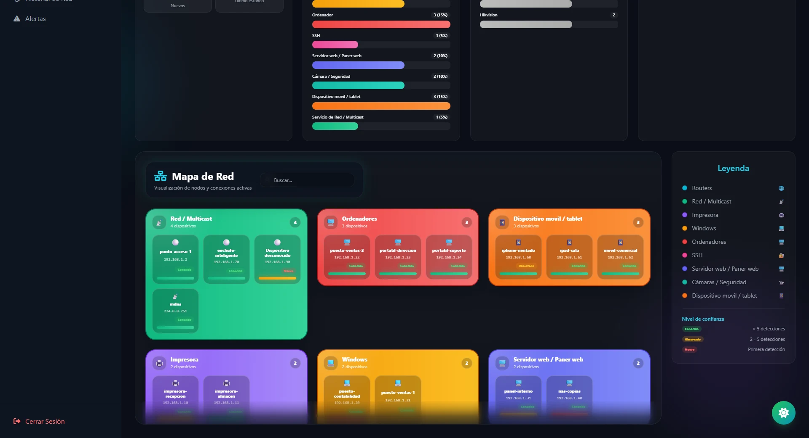

Un escáner que no molesta a la red
La idea era un escáner completo: barrido con ping y sondeo de puertos con Scapy. En la red de la empresa eso no era viable, así que tuvimos que reducirlo a una observación pasiva.
El resultado lee la tabla ARP del propio equipo y las conexiones que ya existen, sin enviar paquetes a nadie. Detecta menos puertos, pero se puede usar en una red real sin que salten las alarmas de nadie.
